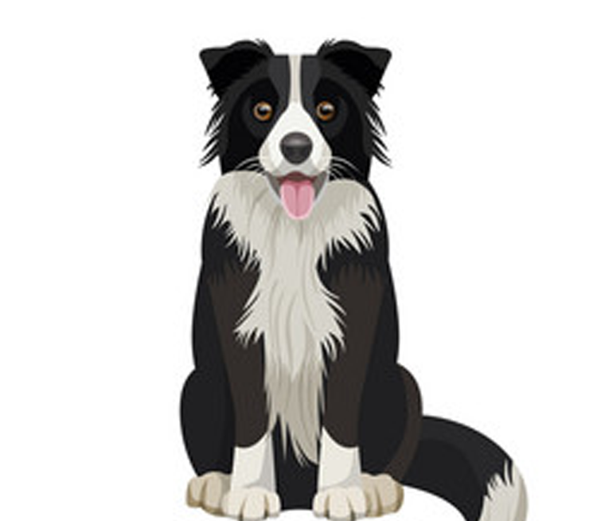
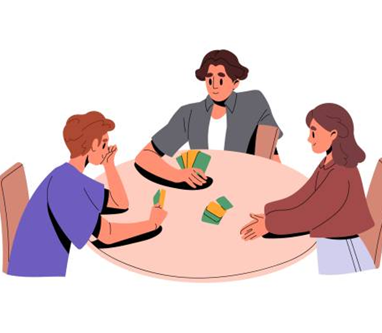

Hobbies and Interests
Video Games

Video games have been a passion of mine for as long as I can remember, providing an immersive escape into diverse virtual worlds. I find joy in exploring the intricate narratives and character developments within Role-Playing Games (RPGs), where every decision shapes the unfolding story. Engaging in the strategic intensity of First-Person Shooter (FPS) games adds an adrenaline rush, testing my reflexes and tactical thinking. Additionally, I'm drawn to the intricate world of deck-building games, where each deck becomes a unique strategy canvas, requiring careful planning and adaptability. This digital realm not only entertains but also serves as a canvas for creativity and strategic thinking, making video gaming a dynamic and fulfilling hobby that spans various genres and experiences.
Animals
My profound love for animals, particularly dogs, is a cornerstone of my interests. Among these cherished companions, my own dog, Scout, a Border Collie, holds a special place in my heart. Border Collies, known for their intelligence and boundless energy, bring an extraordinary level of joy and companionship into my life.
Table Top and Card Games
Tabletop and card games hold a special place in my heart, providing a dynamic blend of strategy and social interaction. Dungeons & Dragons transports me into fantastical realms where storytelling and collaboration intertwine, creating memorable adventures with fellow players. Meanwhile, Yu-Gi-Oh taps into my strategic side, offering thrilling card duels and the joy of crafting powerful decks. Whether embarking on epic quests or engaging in intense card battles, these games not only entertain but also foster connections and shared moments of excitement, making them an essential and cherished part of my leisure pursuits.
Reading
Immersing myself in the world of reading is not just a hobby but a journey of endless discovery. The pages of books like "The Witcher" series transport me to realms where magic intertwines with the human experience, offering a thrilling escape into dark fantasy. Exploring the expansive Star Wars Legends universe delves into the epic saga, where iconic characters and space opera adventures unfold with each turn of the page. Beyond specific series, my love for sci-fi and fantasy books in general takes me on adventures across galaxies, introducing me to futuristic worlds, complex characters, and imaginative concepts. Each book becomes a portal to new dimensions, sparking my imagination and enriching my understanding of different realms and possibilities. Reading, for me, is not just a pastime but a passport to diverse universes waiting to be explored.